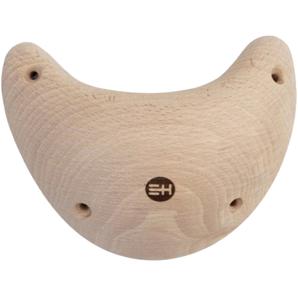

John Gill, often called "The father of modern bouldering", decided to combine gymnastics and rock climbing, and realised that boulders and short outcrops were the best name to do it.
He also introduced chalk as a way to keep climber's hands dry for better grip and promoted using dynamic moves, sometimes known as dynos.
History of bouldering
Types of bouldering holds
Jugs are holds that usually have a good grip, hence the named after "jug handles". They usually are big and have a hole at the top for climbers to get good grips on both hands, their "easy to hold" nature makes them a commodity in beginner routes and a rare treat in advanced routes.
Mini Jugs are a subtype of jugs that are much smaller and usually only big enough to grab with 1 hand
Slopers are big holds that do not have dents or holes to grip onto, forcing climbers to increase friction by having high area of contact. These holds are somewhat rare in beginner routes and appear move in intermediate routes.
Crimps are small holds that have very small areas to grip onto, requiring a lot of grip strength and technique to properly use. These holds are rare in beginner climbs as they are hard to grip but are common in advanced routes and slab routes.
Volumes are big holds that usually act as a potrusion for other holds to be places on. Sometimes they are used as holds, more often used as foot holds instead of hand holds. They appear in all kinds of routes as protrusions for other holds or as a hold itself.
Types of bouldering routes
Slabs are routes set on less-than-vertical walls, making them less steep than vertical walls. These routes primarily have crimps and other small holds to add difficulty. They are also notorious for causing injuries as climbers often have to stay very close to the wall, which can cause abrasions and bruises when falling.
Overhang routes are routes set on more-than-vertical walls, making them very reliant on hand and grip strengh. They require much more upper body strength than lower body strength which make them very difficult to climbers with less strength.
How to start bouldering
Bouldering has 2 main equipments, climbing shoes and chalk bags.
Climbing shoes are typically avalible for rent at most bouldering places but most avid boulderers buy their own shoes.
Chalk is usually not needed at beginner level routes but sometimes are essential for more advanced routes, chalk is stored in a chalk bag, both are commonly sold at bouldering places.
Bouldering routes have many different grading systems, most common of which is the V-grade system where routes are graded from V1 (Easiest) to V17 (Hardest).
Many places have their own grading systems, like Boulder Planet which grades routes from 1 (Easiest) to 12 (Hardest).
There are bouldering gyms in quite a few places, so it would not be hard to find one nearby where you are, all thats left is to go there and start bouldering.
Well-known Boulderers
Magnus Mitbo is a Norwegian rock climber, who retired from competition climbing in 2017. He makes bouldering and rock climbing video content, and has amassed nearly 3 million subscribers on youtube.
Adam Ondra is a Czech rock climber, who is still climbing competitively. He is the first to win the world cup for both bouldering and lead climbing in the same year, one of only 2 to ever win both world cups.

Janja Garnbret is a Slovenian rock climber, who is often considered the greatest competitive climber of all time. She is the first ever female olympic gold medalist in climbing and first female climber to onsight a 8c sports climbing route.